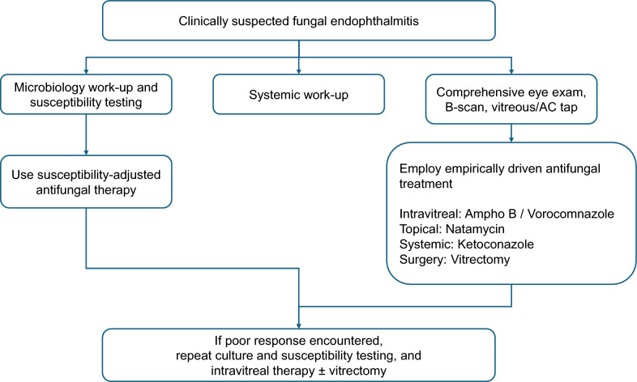
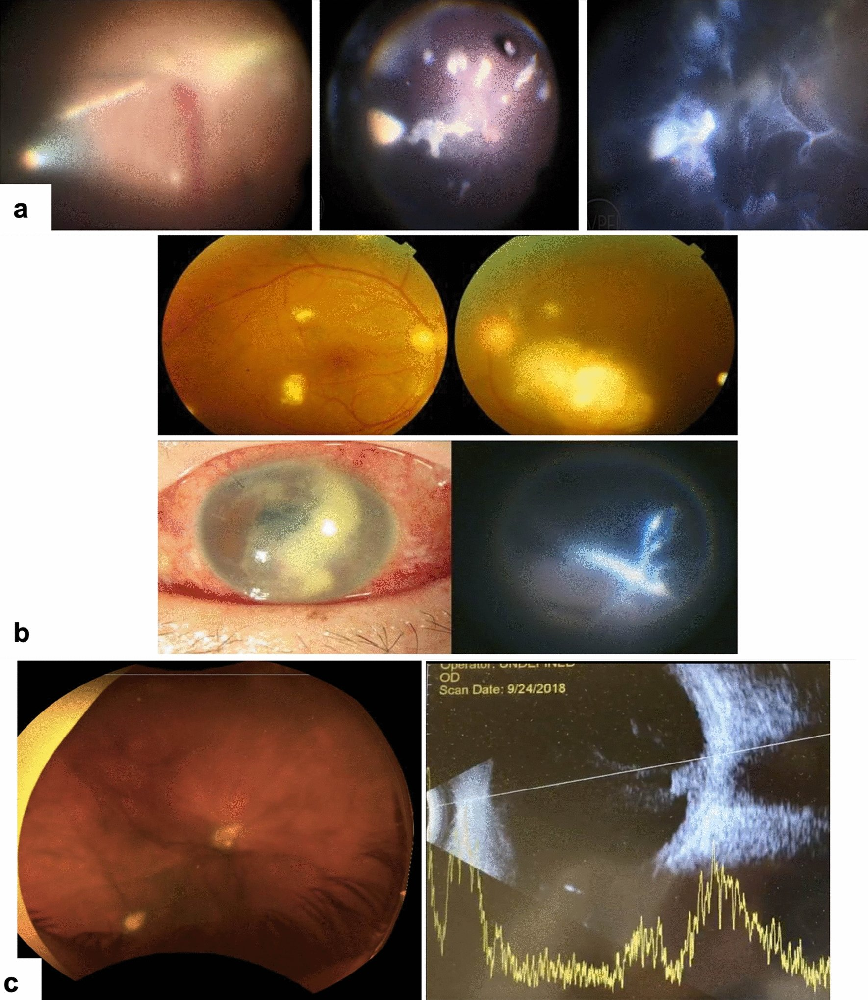
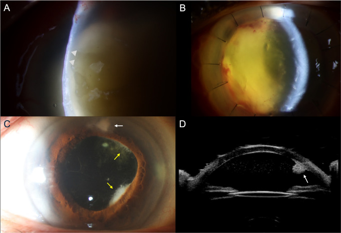
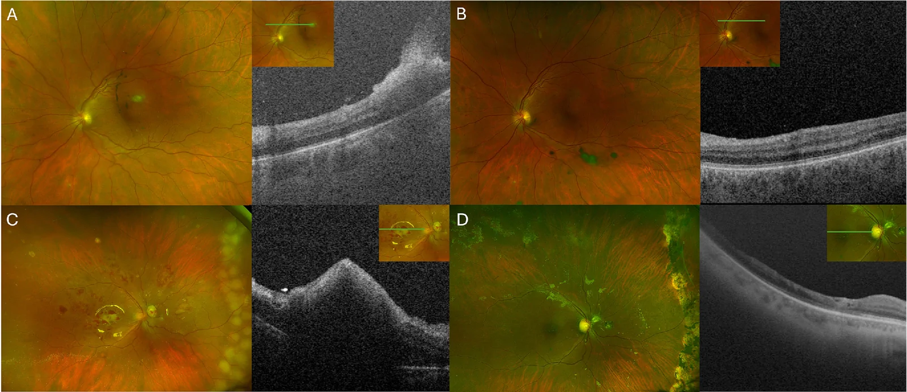
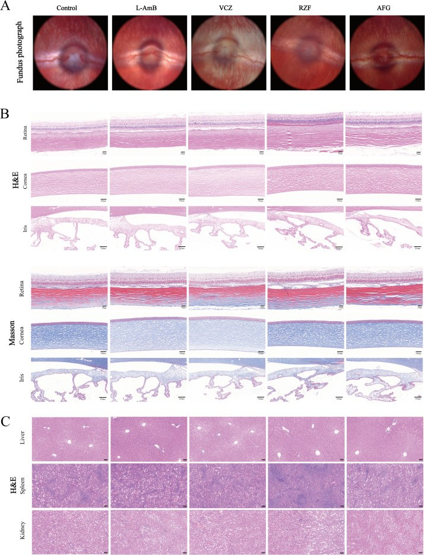
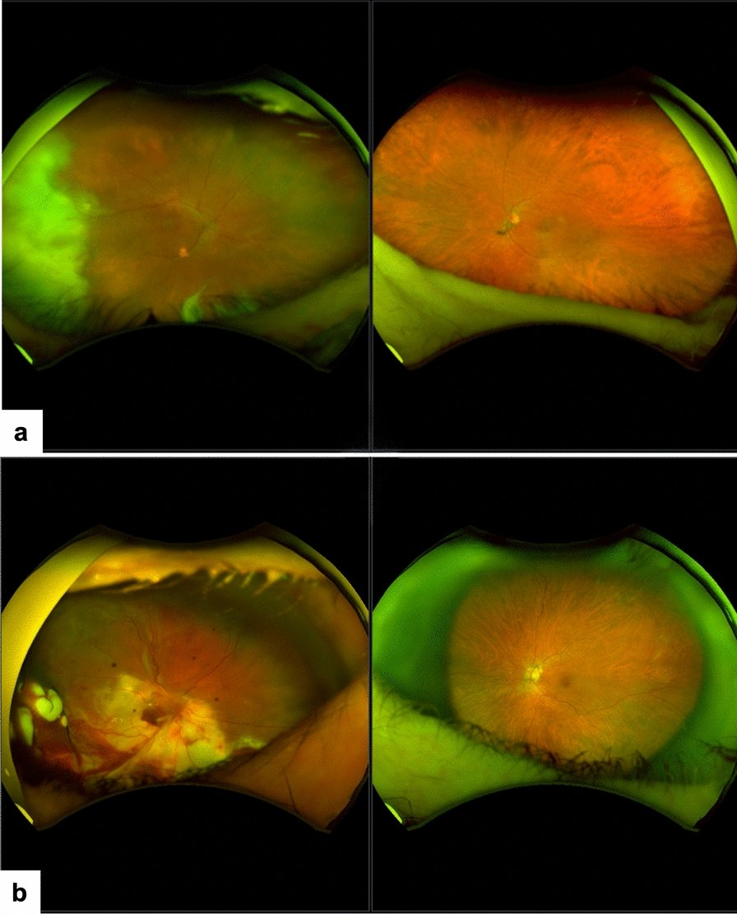
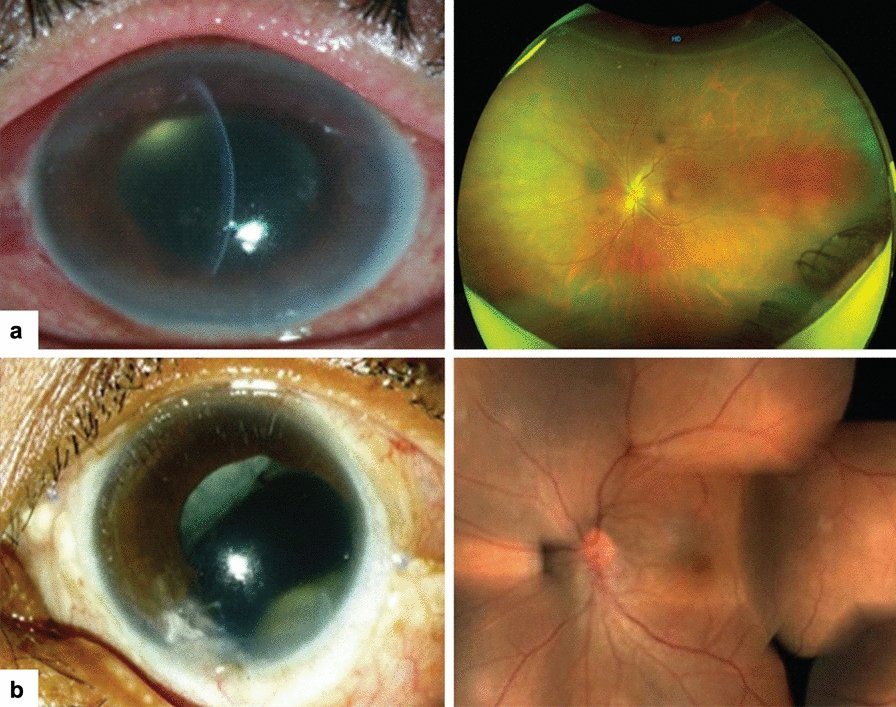

474 — Kháng nấm nội nhãn: chọn thuốc theo loài & kháng sinh đồ / Intravitreal antifungal selection by species and susceptibility
Tags: pattern:viem-noi-nhan pattern:chon-thuoc-theo-loai pattern:fluff-ball vung:dich-kinh vung:vong-mac score:MIC score:khang-sinh-do protocol:tiem-noi-nhan protocol:cat-dich-kinh protocol:PCR-dich-kinh incidentaloma:khang-nam
Mức chắc chắn (certainty): tổng hợp y văn (literature synthesis) — nhóm tự biên từ: đồng thuận APVRS/AAPPO/APSOII 2025 (CC BY 4.0, PMC12516872), nghiên cứu echinocandin trên C. albicans (Antimicrob Agents Chemother 2026, CC BY 4.0, PMC13148047), loạt Aspergillus (IOVS 2026, CC BY-NC-ND 4.0, PMC13676249), loạt Fusarium (IOVS 2026, CC BY-NC-ND 4.0, PMC13284917), kháng sinh đồ Fusarium theo loài (Antimicrob Agents Chemother 2025, CC BY 4.0, PMC12135539) và độc tính võng mạc thực nghiệm (J Fungi 2025, CC BY 4.0, PMC12387355).
Vì sao bài này quan trọng: bài 463 đã dạy nhận diện viêm nội nhãn nội sinh do nấm. Nhưng khi đã nhận diện, câu hỏi tiếp theo quyết định giữ hay mất mắt là: chọn thuốc nào, cho loài nào, liều bao nhiêu, khi nào tiêm lại, khi nào mổ. Câu trả lời không nằm trong một phác đồ chung: Candida nhạy cả ba nhóm chính; Aspergillus cần azole/polyene và cắt dịch kính sớm; Fusarium kháng nội tại (intrinsic resistance) với nhiều thuốc và phức hợp F. solani có MIC cao nhất — nơi rezafungin và ibrexafungerp hoàn toàn không có tác dụng. Trong loạt Aspergillus mới nhất, dù 100% mắt được tiêm kháng nấm, 86% được cắt dịch kính, 79% dùng kháng nấm toàn thân, chỉ 7% đạt ≥ 20/200 và 50% còn LP/NLP. Chọn đúng thuốc từ đầu là biến số duy nhất còn can thiệp được.
1. Tổng quan bệnh học – cơ chế hình ảnh – cơ chế chọn thuốc
- Bốn nhóm thuốc, bốn đích — quyết định phổ:
- Polyene (amphotericin B, amphotericin B dạng lipid): gắn ergosterol → tạo lỗ màng tế bào nấm. Phổ rộng nhất, diệt nấm (fungicidal) theo nồng độ, nhưng độc thận khi toàn thân và độc võng mạc khi tiêm nội nhãn liều cao.
- Azole (fluconazole, voriconazole, posaconazole): ức chế CYP51/14α-demethylase → chặn tổng hợp ergosterol. Fluconazole phổ hẹp (chủ yếu Candida); voriconazole phổ rộng hơn (gồm C. glabrata/krusei và nấm mốc); posaconazole bao phủ Mucorales.
- Echinocandin (caspofungin, micafungin, anidulafungin, rezafungin): ức chế β-1,3-D-glucan synthase → chỉ hiệu quả với Candida (và Aspergillus ở mức kìm nấm), KHÔNG có vai trò với Fusarium/Mucorales.
- Pyrimidine analogue (flucytosine) và allylamine (terbinafine): dùng bổ trợ/kinh nghiệm hạn chế; terbinafine có phổ theo loài (xem mục 3).
- Vì sao "cùng một loài" vẫn phải có kháng sinh đồ: MIC là nồng độ ức chế tối thiểu; nhưng hiệu quả tại mắt phụ thuộc thêm nồng độ đạt được trong dịch kính, thời gian bán thải, gắn protein, biofilm và ổ hoại tử không tưới máu. Đây là lý do MIC thấp chưa chắc đã khỏi — và ngược lại MIC cao có thể vẫn kiểm soát được nếu nồng độ nội nhãn cao gấp nhiều lần.
- Cơ chế hình ảnh (TẠI SAO — nối tiếp bài 463):
- Nấm từ máu bám hắc mạc → phá hàng rào máu–võng mạc ngoài → viêm hắc mạc dẹt (flat choroiditis) (chưa cần tiêm nội nhãn).
- Khi tổn thương nhô lên (chorioretinitis) hoặc vào dịch kính, khối nấm + bạch cầu trung tính tạo "fluff ball"/"chuỗi ngọc trai" — lúc này tiêm nội nhãn + cắt dịch kính mới có ý nghĩa.
- Nấm mốc xâm lấn mạch → hoại tử, hypopyon, thủng giác mạc/củng mạc; hình ảnh nặng hơn, tiến triển giờ–ngày, và ổ hoại tử không có mạch chính là nơi thuốc không tới → phải mổ lấy tổ chức hoại tử, không chỉ tiêm.
- Ngưỡng định lượng phải nhớ:
- Liều nội nhãn (đồng thuận APVRS 2025, 0,1 mL): amphotericin B 5 µg; caspofungin 50 µg; fluconazole 100–200 µg; micafungin 25 µg; posaconazole 100 µg; voriconazole 100 µg. Natamycin chỉ dùng tại chỗ 50 mg/mL (không tiêm nội nhãn).
- Liều toàn thân (người lớn): amphotericin B 0,5–1,0 mg/kg; caspofungin 70 mg (nạp) → 50 mg/24h; fluconazole 200–400 mg/ngày; posaconazole 300 mg q12h (nạp) → 300 mg/24h; voriconazole 6 mg/kg q12h (nạp) → 4 mg/kg q12h.
- MIC C. albicans ATCC 10231: amphotericin B (dạng lipid) 4 µg/mL; voriconazole 0,125–0,25; rezafungin 0,016–0,03125; anidulafungin 0,016–0,03125 (PMC13148047).
- Độc tính tế bào võng mạc (IC50, ARPE-19): amphotericin B lipid và voriconazole > 1.000 µg/mL; rezafungin 40–50 µg/mL; anidulafungin 30–40 µg/mL → chỉ số chọn lọc IC50/MIC ≈ 10³.
- Hiệu quả trên mô hình thỏ (35 µg/0,1 mL rezafungin hoặc anidulafungin): điểm lâm sàng ngày 7: chứng 9,67; amphotericin B 3,00; voriconazole 2,67; rezafungin 2,67; anidulafungin 3,00; amphotericin B có CFU thấp nhất (log10 3,93 so với 4,69–4,70 của ba thuốc còn lại), tất cả đạt diệt > 99,3%.
- Loạt Aspergillus (14 mắt): cắt dịch kính 86% (lặp 29%), tiêm nội nhãn 100% (voriconazole 71%), toàn thân 79%; ≥ 20/200 chỉ 7%, LP/NLP 50%, phthisis 21%, không bỏ mắt; theo dõi 554 ngày.
- Loạt Fusarium (14 mắt): ghép giác mạc điều trị 100%, cắt dịch kính 57%; ≥ 20/400 chỉ 29%, LP/NLP 21%; biến chứng 71% (tăng nhãn áp/glaucoma 80% trong số có biến chứng, bong võng mạc 30%); khởi trị kháng nấm trung vị 5 ngày, natamycin trung vị 8 ngày sau khi đến; 3/14 (21%) được thử corticoid trước natamycin — đều là chậm trễ.
- Kháng sinh đồ Fusarium (EUCAST): natamycin MIC 2–8 mg/L cho mọi phức hợp; manogepix ≤ 0,016–0,06 mg/L (nhạy chung); olorofim rất nhạy với FFSC (MIC90 0,25) nhưng kháng với FSSC/FDSC/FIESC (MIC > 8); terbinafine nhạy với FDSC/FFSC/FOSC nhưng MIC > 32 với FIESC; rezafungin và ibrexafungerp không có tác dụng.
2. Mẫu hình + chẩn đoán phân biệt theo loài (gamut)
Câu hỏi lọc: "Đã xác định viêm nội nhãn do nấm — loài nào, nhạy thuốc gì, và có ổ hoại tử/biofilm cần mổ không?" → câu trả lời chia theo loài, không theo "nấm nói chung".
Gamut theo loài (thay cho gamut theo vị trí ở bài 463):
- Nấm men — Candida: C. albicans (nhạy cả ba nhóm), C. tropicalis, C. parapsilosis, các loài kháng azole: C. glabrata, C. krusei (voriconazole/echinocandin thay fluconazole). Hình ảnh: chorioretinitis nhỏ + "fluff ball", hai mắt, bối cảnh candidemia/ICU.
- Nấm mốc — Aspergillus: A. fumigatus, A. flavus, A. niger; xâm lấn mạch, hoại tử nhanh, hypopyon, thủng giác mạc; voriconazole nội nhãn là trụ cột, amphotericin B là lựa chọn thay thế.
- Nấm mốc — Fusarium: phức hợp F. solani (FSSC) MIC cao nhất, F. oxysporum, F. fujikuroi; thường sau chấn thương thực vật/dùng kính tiếp xúc; kháng nội tại nhiều azole, cần natamycin tại chỗ + voriconazole nội nhãn, cân nhắc amphotericin B.
- Nấm mốc sẫm màu (dematiaceous): Curvularia, Lasiodiplodia, Alternaria — azole (voriconazole/posaconazole) + mổ.
- Mucorales (Mucor/Rhizopus/Lichtheimia): KHÔNG dùng echinocandin, amphotericin B + posaconazole + mổ rộng là bắt buộc; hình ảnh hoại tử lan nhanh, đau nhiều, mù nhanh.
- Loài hiếm/khó điều trị: Purpureocillium lilacinum, Scopulariopsis, Trichosporon, Arthrographis — kháng sinh đồ là bắt buộc, thường phải bỏ mắt (PMC13187959).
3. Bảng so sánh phân biệt (ma trận đối chiếu)
| Thực thể (theo loài) | Hình ảnh / bối cảnh điển hình | Chốt vào (rule-in) | Chốt loại (rule-out) | Thuốc & xác nhận |
|---|---|---|---|---|
| Candida nhạy azole | Chorioretinitis nhỏ, "fluff ball", candidemia, catheter/TPN | Cấy/PCR Candida + MIC fluconazole thấp | MIC fluconazole cao → không dùng fluconazole | Fluconazole 100–200 µg nội nhãn ± toàn thân 200–400 mg/ngày; xác nhận bằng cấy + MIC |
| Candida kháng azole (C. glabrata/krusei) | Như trên nhưng đáp ứng kém fluconazole | MIC fluconazole/voriconazole cao, MIC echinocandin thấp | Cấy âm + tổn thương không điển hình → sinh thiết lại | Voriconazole 100 µg hoặc caspofungin 50 µg/micafungin 25 µg; cân nhắc rezafungin/anidulafungin (dữ liệu còn thực nghiệm) |
| Aspergillus | Hypopyon, hoại tử, thủng giác mạc, nội sinh ở ĐTĐ/giảm miễn dịch | Nhuộm/cấy thấy sợi nấm có vách phân nhánh 45° + voriconazole nội nhãn | Không có sợi nấm + diễn tiến cấp giờ → nghĩ vi khuẩn | Voriconazole 100 µg nội nhãn ± amphotericin B 5 µg; cắt dịch kính 86% trong loạt; xác nhận cấy + MIC |
| Fusarium | Sau chấn thương thực vật/kính tiếp xúc, loét giác mạc lan, vòng thâm nhiễm, hypopyon | Cấy Fusarium + FSSC (MIC cao) | MIC thấp + đáp ứng natamycin → thể nhẹ hơn | Natamycin 50 mg/mL tại chỗ + voriconazole 100 µg nội nhãn; KHÔNG dựa vào echinocandin; xác nhận loài/phức hợp |
| Dematiaceous | Loét chậm, sắc tố nâu–đen, sau chấn thương gỗ | Cấy nấm sẫm màu + MIC azole thấp | Không mọc trong 4 tuần → cấy lại/nuôi cấy mô | Voriconazole/posaconazole ± amphotericin B; cắt dịch kính |
| Mucorales | Hoại tử lan nhanh, đau nhiều, mù nhanh, hốc mắt | Sợi nấm không vách/rộng + sinh thiết mô | Echinocandin đơn thuần → không đủ | Amphotericin B liều cao + posaconazole + mổ rộng |
| Biofilm / ổ hoại tử | Tái phát sau tiêm, màng trước võng mạc, tổn thương không nhỏ đi | Cấy lại dương + tổn thương đặc | Đục dịch kính nhẹ, không màng → chưa cần mổ | Cắt dịch kính + làm sạch ổ + tiêm lại; xác nhận bằng cấy lại |

Sơ đồ đồng thuận APVRS/AAPPO/APSOII 2025: (1) làm xét nghiệm vi sinh + kháng sinh đồ song song với khám mắt/B-scan/chọc dịch kính; (2) khởi trị theo kinh nghiệm (nội nhãn amphotericin B/voriconazole, tại chỗ natamycin, toàn thân theo loài, mổ khi cần); (3) khi đáp ứng kém → cấy lại + kháng sinh đồ lại + tiêm lại ± cắt dịch kính. Điểm cốt tử: "kháng sinh đồ điều chỉnh thuốc" là một nhánh chính thức của phác đồ, không phải tùy chọn. Nguồn: Das T et al., Eye Vis (Lond) 2025 (PMC12516872) Fig. 6, CC BY 4.0.4. Protocol chụp/xét nghiệm + chọn thuốc + sơ đồ quyết định
Bước 1 — Xác định "có nấm" và "nấm ở đâu":
- Soi đáy mắt giãn đồng tử ± siêu âm B-scan (khi đục dịch kính); OCT khi thấy đáy mắt; UBM nếu tổn thương thể mi/tiền phòng.
- Chọc hút dịch tiền phòng/dịch kính (hoặc cắt dịch kính chẩn đoán): nhuộm Gram/Giemsa/Calcofluor, cấy trên Sabouraud + thạch máu, PCR/ITS sequencing, kháng sinh đồ (EUCAST/CLSI).
- Xét nghiệm hệ thống: cấy máu, β-D-glucan, galactomannan (Aspergillus), HIV, HbA1c, miễn dịch; PET-CT/CT ngực–bụng nếu nghi nội sinh.
Bước 2 — Chọn thuốc theo loài (bảng liều mục 1):
- Chưa biết loài (kinh nghiệm): voriconazole 100 µg nội nhãn ± amphotericin B 5 µg; natamycin tại chỗ nếu có loét giác mạc; kháng nấm toàn thân theo bối cảnh (fluconazole nếu nghi Candida; voriconazole nếu nghi nấm mốc).
- Đã biết loài: điều chỉnh theo MIC — không giữ "phác đồ mặc định" khi kháng sinh đồ nói khác.
- Echinocandin: chỉ dùng khi Candida kháng azole/không dung nạp amphotericin B; không dùng cho nấm mốc; liều nội nhãn caspofungin 50 µg, micafungin 25 µg; rezafungin/anidulafungin 35 µg còn thực nghiệm.
Bước 3 — Khi nào tiêm lại, khi nào mổ:
- Tiêm lại 48–72 giờ nếu không cải thiện hoặc tổn thương còn hoạt động; trung bình > 1 mũi (loạt Ấn Độ 730 ca: tất cả cần cắt dịch kính + trung bình 2 kháng nấm nội nhãn).
- Cắt dịch kính (PPV): viêm dịch kính trung bình–nặng, màng trước võng mạc, ổ hoại tử đặc, đục dịch kính cản trở theo dõi, hoặc không đáp ứng sau 1–2 mũi; ở Aspergillus 86% và Fusarium 57% trong các loạt gần đây phải mổ.
- Lấy dịch kính trong mổ để cấy lại — đây là bước điều chỉnh thuốc quan trọng nhất khi thất bại.
- Corticoid: không khuyến cáo trong viêm nội nhãn do nấm (đồng thuận 2025); thử corticoid trước khi nghĩ đến nấm là bẫy (21% ca Fusarium đã bị thử corticoid trước natamycin).
flowchart TD
A[Viêm nội nhãn nghi nấm] --> B[Chọc dịch kính hoặc cắt dịch kính chẩn đoán]
B --> C[Nhuộm + cấy + PCR/ITS + kháng sinh đồ]
C --> D{Loài gì?}
D -->|Candida nhạy azole| E[Fluconazole 100-200 microgam noi nhan; toan than 200-400 mg/ngay]
D -->|Candida khang azole| F[Voriconazole 100 microgam hoac caspofungin 50 microgam/micafungin 25 microgam]
D -->|Aspergillus| G[Voriconazole 100 microgam + amB 5 microgam; cat dich kinh som]
D -->|Fusarium| H[Natamycin tai cho 50 mg/mL + voriconazole 100 microgam; can nhac amB]
D -->|Mucorales| I[Amphotericin B lieu cao + posaconazole + mo rong]
D -->|Chua ro| J[Voriconazole 100 microgam + amB 5 microgam theo kinh nghiem]
E --> K{Dap ung sau 48-72 gio?}
F --> K
G --> K
H --> K
I --> K
J --> K
K -->|Khong| L[Cay lai + khang sinh do lai + tiem lai ± cat dich kinh]
L --> D
K -->|Co| M[Tiep tuc du phac do, theo doi OCT/sieu am]
5. Biến thể bình thường và cạm bẫy
- "MIC thấp = sẽ khỏi" — sai: F. solani có thể MIC natamycin 4–8 mg/L nhưng vẫn thất bại vì ổ hoại tử không tưới máu và biofilm; ngược lại rezafungin MIC 0,016 nhưng chưa có dữ liệu người.
- "Echinocandin phổ rộng" — sai: echinocandin không có tác dụng với Fusarium/Mucorales, và với Aspergillus chỉ kìm nấm. Dùng đơn thuần cho nấm mốc = bỏ mặc ổ hoại tử.
- "Đã tiêm voriconazole là đủ" — sai: loạt Fusarium có 100% được điều trị đa mô thức (tại chỗ + nội nhãn + mổ) mà chỉ 29% đạt ≥ 20/400; loạt Aspergillus 100% tiêm nội nhãn, 86% cắt dịch kính mà 50% còn LP/NLP.
- Chậm trễ là biến số chính: Fusarium khởi trị kháng nấm trung vị 5 ngày, natamycin 8 ngày sau khi đến; 21% bị thử corticoid trước — mỗi ngày chậm làm tăng nguy cơ mất mắt.
- "Cấy âm = không phải nấm": độ nhạy cấy dịch kính không cao; nếu hình ảnh điển hình + bối cảnh nguy cơ, vẫn điều trị và cấy lại trong mổ.
- "Đục dịch kính nhẹ thì không cần mổ": với Candida, viêm dịch kính nhẹ có thể chỉ cần tiêm; nhưng màng/ổ đặc là chỉ định mổ dù thị lực còn tốt.
- Độc tính: amphotericin B nội nhãn liều cao gây hoại tử võng mạc; voriconazole nhiều lần có độc tính tích lũy trên thực nghiệm; micafungin tổn thương mô học nhiều hơn voriconazole trong nghiên cứu thỏ — không dùng liều "cao hơn cho chắc".
- Corticoid: không dùng trong giai đoạn hoạt động; nếu bệnh nhân đã dùng corticoid toàn thân vì lý do khác, giảm liều nhanh và theo dõi sát.
6. Tự lượng giá — Blind Quiz
Ca 1 — Bệnh nhân nội sinh, đáy mắt cho thấy các dấu hiệu sau (a) và tổn thương hai mắt (b):

- Hỏi: gọi tên 3 dấu hiệu ở hàng (a)? Hàng (b) gợi ý nội sinh hay ngoại sinh? Bước tiếp theo ngay sau khi thấy?
Bấm để hiện đáp án (findings + chẩn đoán)
- Dấu hiệu: (a) "chuỗi ngọc trai" (string of pearls) — đám nấm/tế bào viêm xếp chuỗi trong dịch kính; đọng trước võng mạc (pre-retinal deposits); màng dịch kính (vitreous membranes). (b) nhiều ổ dưới võng mạc/hắc võng mạc hai mắt + hypopyon → viêm nội nhãn nội sinh hai mắt.
- Chẩn đoán: viêm nội nhãn do nấm — cần chọc dịch kính/cắt dịch kính chẩn đoán ngay, cấy + PCR + kháng sinh đồ, khám toàn thân tìm ổ nội sinh (candidemia, catheter, TPN).
- Nguồn ảnh: Das T et al., Eye Vis (Lond) 2025 (PMC12516872) Fig. 1, CC BY 4.0.
Ca 2 — Bệnh nhân Fusarium sau chấn thương thực vật: 4 ô lâm sàng (A–D):

- Hỏi: dấu hiệu nào cho thấy nấm đã vào nội nhãn? Vì sao không chờ kết quả cấy mới điều trị? Thuốc nào không dùng đơn thuần?
Bấm để hiện đáp án (findings + chẩn đoán)
- Dấu hiệu: (A) loét giác mạc lan + mảng nội mô (endothelial plaque) + hypopyon toàn bộ; (B) phù ghép, mủ tiền phòng; (C) mủ/fibrin trong tiền phòng, tổn thương mống mắt; (D) UBM: tổ chức đặc trong tiền phòng dính mống mắt.
- Chẩn đoán: viêm nội nhãn do Fusarium — trong loạt 14 mắt: ghép giác mạc điều trị 100%, cắt dịch kính 57%, ≥ 20/400 chỉ 29%, LP/NLP 21%.
- Vì sao không chờ cấy: khởi trị trung vị 5 ngày, natamycin 8 ngày đã là chậm; không chờ khi có loét + hypopyon.
- Thuốc không dùng đơn thuần: echinocandin (không có tác dụng với Fusarium); rezafungin/ibrexafungerp không tác dụng trên mọi phức hợp.
- Nguồn ảnh: Kang S et al., Invest Ophthalmol Vis Sci 2026 (PMC13284917) Fig. 1, CC BY-NC-ND 4.0 — giữ nguyên bản, không crop/ghép.
Ca 3 — Aspergillus nội sinh ở bệnh nhân đái tháo đường type 1: đáy mắt + OCT theo thời gian (A–D):

- Hỏi: tổn thương nằm ở khoang nào? Vì sao Aspergillus khó điều trị hơn Candida? Trong loạt này, tỷ lệ đạt ≥ 20/200 là bao nhiêu?
Bấm để hiện đáp án (findings + chẩn đoán)
- Dấu hiệu: các ổ hắc võng mạc vàng–trắng + đục dịch kính, OCT cho thấy tổn thương dưới võng mạc/hắc mạc, dịch dưới võng mạc và phá vỡ lớp ngoài võng mạc; các panel sau cho thấy thu nhỏ tổn thương nhưng để lại sẹo/teo.
- Vì sao khó hơn Candida: Aspergillus xâm lấn mạch → nhồi máu/hoại tử, tiến triển giờ–ngày, ít đáp ứng với thuốc đơn thuần; cần voriconazole nội nhãn + cắt dịch kính sớm.
- Số liệu: 14 mắt, cắt dịch kính 86%, tiêm nội nhãn 100%, toàn thân 79%; ≥ 20/200 chỉ 1/14 (7%); LP/NLP 7/14 (50%); phthisis 21%.
- Nguồn ảnh: Kang S et al., Invest Ophthalmol Vis Sci 2026 (PMC13676249) Fig. 3, CC BY-NC-ND 4.0 — giữ nguyên bản, không crop/ghép.
Ca 4 — Mô hình thỏ C. albicans: ảnh đáy mắt và mô học các nhóm (đối chứng, L-AmB, VCZ, RZF, AFG):

- Hỏi: mục đích của ảnh mô học gan–lách–thận? Vì sao kết quả này không chứng minh hiệu quả trên người? Liều rezafungin/anidulafungin dùng là bao nhiêu?
Bấm để hiện đáp án (findings + chẩn đoán)
- Mục đích: chứng minh an toàn hệ thống khi thuốc thoát ra khỏi mắt — không có tổn thương gan/lách/thận rõ; đồng thời so mô học võng mạc/giác mạc/mống mắt giữa các nhóm.
- Vì sao không chứng minh trên người: mô hình thỏ, liều 35 µg/0,1 mL cho rezafungin/anidulafungin, thể tích dịch kính thỏ ~1,6 mL → nồng độ ~25 µg/mL, khác dược động học người; chưa có thử nghiệm ngẫu nhiên.
- Số liệu liên quan: CFU thấp nhất ở amphotericin B (log10 3,93), ba thuốc còn lại 4,69–4,70; IC50 ARPE-19: RZF 40–50, AFG 30–40 µg/mL (chỉ số chọn lọc ~10³).
- Nguồn ảnh: Zhang Y et al., Antimicrob Agents Chemother 2026 (PMC13148047) Fig. 2, CC BY 4.0.
Ca 5 — Kết quả điều trị nội sinh (ảnh 1) và ngoại sinh (ảnh 2) trong đồng thuận:


- Hỏi: điều gì quyết định giữ được mắt ở bệnh cảnh nội sinh? Vì sao bệnh cảnh ngoại sinh lại mất chức năng dù đã điều trị?
Bấm để hiện đáp án (findings + chẩn đoán)
- Ảnh 1 — viêm nội nhãn nội sinh hai mắt: tổn thương dưới võng mạc/hắc mạc lan rộng trước điều trị; sau kháng nấm toàn thân + nội nhãn + cắt dịch kính → tổn thương thoái triển, võng mạc áp, thị lực hồi phục một phần. Yếu tố quyết định: chẩn đoán sớm + điều trị đa đường + kiểm soát ổ nội sinh.
- Ảnh 2 — ngoại sinh sau đục thủy tinh thể/chấn thương: hoại tử lan, màng trước võng mạc, bong võng mạc co kéo → mất chức năng vĩnh viễn dù đã mổ; yếu tố quyết định: độ trễ và mức xâm lấn của nấm mốc.
- Nguồn ảnh: Das T et al. (PMC12516872) Fig. 5 (nội sinh) và Fig. 4 (ngoại sinh), CC BY 4.0.
Bài liên quan chéo
- 400 – Tổng quan Mắt & thị giác
- 463 – Viêm nội nhãn nội sinh do nấm (Candida/Aspergillus) (nhận diện & sàng lọc)
- 462 – U lympho nội nhãn (PVRL) (masquerade)
- 473 – U lympho T/NK & u lympho thứ phát ở mắt (masquerade)
- 460 – Can thiệp mắt (kỹ thuật tiêm nội nhãn, cắt dịch kính)
- 449 – Chấn thương mắt & dị vật nội nhãn (đường vào nấm sau chấn thương)
Ảnh
474_khang-nam_phac-do_PMC12516872-CCBY.jpg— Das T et al., Eye Vis (Lond) 2025 (PMCID: PMC12516872) Fig. 6, CC BY 4.0.474_khang-nam_dau-hieu_PMC12516872-CCBY.jpg— Das T et al. (PMC12516872) Fig. 1, CC BY 4.0.474_khang-nam_ket-qua-noi-sinh_PMC12516872-CCBY.jpg— Das T et al. (PMC12516872) Fig. 5, CC BY 4.0.474_khang-nam_ket-qua-ngoai-sinh_PMC12516872-CCBY.jpg— Das T et al. (PMC12516872) Fig. 4, CC BY 4.0.474_Aspergillus_slitlamp_PMC13676249-CCBYNCND.webp— Kang S et al., Invest Ophthalmol Vis Sci 2026 (PMCID: PMC13676249) Fig. 2, CC BY-NC-ND 4.0 (giữ nguyên bản, không crop/ghép).474_Aspergillus_fundus-OCT_PMC13676249-CCBYNCND.webp— Kang S et al. (PMC13676249) Fig. 3, CC BY-NC-ND 4.0 (giữ nguyên bản).474_Fusarium_dien-tien_PMC13284917-CCBYNCND.jpg— Kang S et al., Invest Ophthalmol Vis Sci 2026 (PMCID: PMC13284917) Fig. 1, CC BY-NC-ND 4.0 (giữ nguyên bản).474_Candida_fundus-thu-nghiem_PMC13148047-CCBY.jpg— Zhang Y et al., Antimicrob Agents Chemother 2026 (PMCID: PMC13148047) Fig. 2, CC BY 4.0.474_Candida_dieu-tri-thu-nghiem_PMC13148047-CCBY.jpg— Zhang Y et al. (PMC13148047) Fig. 5, CC BY 4.0.- Chi tiết giấy phép từng ảnh trong
images/CREDITS.md. AuntMinnie / Retina Image Bank: chỉ dẫn link, không tải.
Không dùng để chẩn đoán độc lập khi chưa có người hướng dẫn.